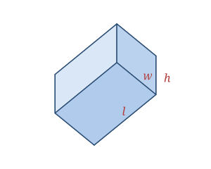

A cuboid, also called a rectangular prism or rectangular box, is a solid with six rectangular faces meeting at right angles. Opposite faces are equal, but unlike the cube its length, width, and height can all differ. A cube is simply the special case where all three are equal.
Real-world cuboids include bricks, cereal boxes, smartphones, books, and shipping containers — most everyday "box" shapes are cuboids.
A cuboid is defined by three measurements: length l, width w, and height h.
| Faces | 6 (all rectangles) |
|---|---|
| Edges | 12 |
| Vertices | 8 |
| Dimensions | l, w, h |
As a polyhedron it satisfies Euler's formula: V − E + F = 8 − 12 + 6 = 2.
Volume V = l · w · h
Surface area SA = 2(lw + lh + wh)
Space diagonal D = √(l² + w² + h²)
Take a cuboid with l = 5, w = 3, h = 4.
V = l · w · h = 5 × 3 × 4 = 60
SA = 2(lw + lh + wh) = 2(15 + 20 + 12) = 2 × 47 = 94
Space diagonal = √(25 + 9 + 16) = √50 ≈ 7.07
A "perfect cuboid" — one where all edges, all face diagonals, and the space diagonal are simultaneously whole numbers — has never been found, and whether one can exist at all is still an unsolved problem in mathematics.